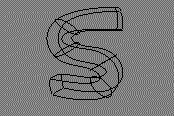
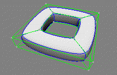

LatticeXvl Extension for X3D
by Lattice Technology,
Inc.
|
Authors |
|
|
Contact |
|
|
Version |
0.2 – 01/20/2002 |
Contents
|
Abstract
|
Abstract
Current VRML modeling techniques using polygon meshes and X3D share the same problem: sending complicated 3D-Data (such as CAD/CAM files) across the Internet. High quality detail and geometry create large data files that are bulky and hard to transmit across current Internet pipelines. Reducing the file size for speed sacrifices accuracy and detail.
To address this problem, we propose an extension to X3D that uses the Lattice[1] structure and XVL[1] data format. Together, Lattice and XVL form a new framework for describing 3D shapes with a highly compressed data format. This results in very small data files that maintain accuracy and are easy to transmit and share across the Internet.
The Lattice structure consists of a Lattice Surface and a Lattice Mesh. The Lattice Surface is a free-form surface represented by Gregory patches[2]. The Lattice Mesh is a low-density polygon mesh. The surface and mesh have one to one correspondence and can be interchanged by using the Lattice algorithm. When transmitting Lattice data, only the Lattice Mesh is transferred across the Internet, thereby maintaining fast transmission of data. The browser on the client side uses the Lattice Mesh data to reconstruct the original Lattice Surface.
Using Lattice as an open extension to X3D will facilitate the transfer of complex 3D-Data in a fast, efficient manner. Lattice Mesh also provides an intuitive scalable 3D modeling solution for users that maintaines the integrity of the 3D model.
Concepts
What is Lattice?
Lattice creates compact 3D-Data representations with high quality surface shapes. The Lattice structure consists of a Lattice Surface and a Lattice Mesh. A Lattice Surface is free-form surface data represented by Gregory Patches[2]. A Lattice Mesh is a polygon mesh that consists of topologies, faces, edges, vertices and rounding weights. These meshes have the same topology. Based on an invertible rounding algorithm, Lattice Mesh can be transformed into Lattice Surface and vice versa. Lattice Mesh creates small data files. Lattice Surface represents precise surfaces. The XVL format can describe both Lattice Surface and Lattice Mesh. The XVL format facilitates the efficient transfer of media rich precise 3D-Data.
Figure 1: Lattice structure. Left model is Lattice
Mesh and right model is Lattice Surface Both models share the same topology.
Design tool
Surface shapes can be intuitively designed by manipulating the simple Lattice Mesh. Lattice Designer is a software tool for creating and editing Lattice models.
Scalability
Lattice models are scalable and maintain a high quality of surfaces. By changing the number of divisions (tesselation), it is easy to control quality of surfaces. In low-end computing environments, use 2 or 4 as number of divisions to maintain performance. In higher-end computing environments, use 6 or more for precise representation. The tesselation can be changed in the client Browser dynamically. This is a kind of LOD (Level of detail as a function for VRML).
Keyword "Lattice"
Some people imagine Lattice as a morphing technique. Lattice structure is not only a morphing technique, but also describes smooth free-form sufaces.
What is XVL?
XVL(eXtensible Virtual world description Language) is a file format that describes the Lattice Structure. It is a compact 3D-Data format with high quality surface representations that facilitates the transfer of 3D-Data across the Internet environment. The XVL file describes only a Lattice Mesh (i.e. polygon) or Lattice Surface ( i.e. Gregory patch). XVL has two levels, G0T0 and G1T1. This proposal is for the G0T0 level. G1T1 treats trimmed surfaces besides G0T0.
Structure of X3D Lattice
X3D Lattice specifies one XVL element, XvlShell element.
XvlShell Element - shell
XvlShell Element corresponds to a shape called Shell described by Lattice
structure. XvlShell element describes Lattice Mesh structure or Lattice
Surface. Shell consists of faces, edges and vertices, corresponds Face elements
Edge elements and Vertex elements.

Figure 2: Structure of Shell.
Shell type
Shell has multiple types. There are two types and each type has few patterns.
|
Shell Type |
Described data in XVL-file |
|
Representation on Browser |
|
Curve Sequence ( Poly line Sequence ) |
|
|
|
|
Curve Sequence ( Bezier Sequence ) |
 |
|
|
|
Surface Set ( Polygon Mesh without rounding ) |
|
|
|
|
Surface Set ( Polygon Mesh with rounding ) |
|
|
|
|
Surface Set ( Gregory Mesh ) |
|
|
|
Figure 3: Shell Types
Rounding weight
Edge and vertex can each have rounding weight represent the original smooth surface. Value of weight is between 0.5 and 1.5. By using Rounding Weight, it is possible to control the shape of surfaces.
Rounding Weight of Edge
|
|
|
|

Figure 4: Edge rounding weight
Rounding Weight of Vertex
|
 |
|
|
Figure 5: Vertex rounding weight
Conclusion
We propose the inclusion of the XVL file framework as a compact 3D-Data format with high quality surface representation as an open extension to the web3D. The data structure can be migrated to X3D for use in the Internet environment. Because XVL is based on a free-form surface, it enables rapid transmission of practical data across the Internet. The Lattice structure is composed of free-form surface and simple polygon mesh. These two data forms have the same topology and are interchangeable. A wide range of surface shapes can be generated using weighting factors. The simple rounding algorithm makes rapid surface generation an easy task.
References
[1] A.Wakita. M.Yajima, T.Harada, H.Toriya, and
H.Chiyokura.,"XVL: A Compact and Qualified 3D Representation With Lattice
mesh and Surface for
the Internet", Proceedings of Web3-VRML2000, pp. 45-51, 2000.
[2] H.Chiyokura and F.Kimura, "Design of Solids
with free-form surfaces", Computer Graphics, pp. 289-298, 1983.
Tools
Lattice Designer, XVL Viewer and XVL Player are some of the software
application tools supporting XVL.